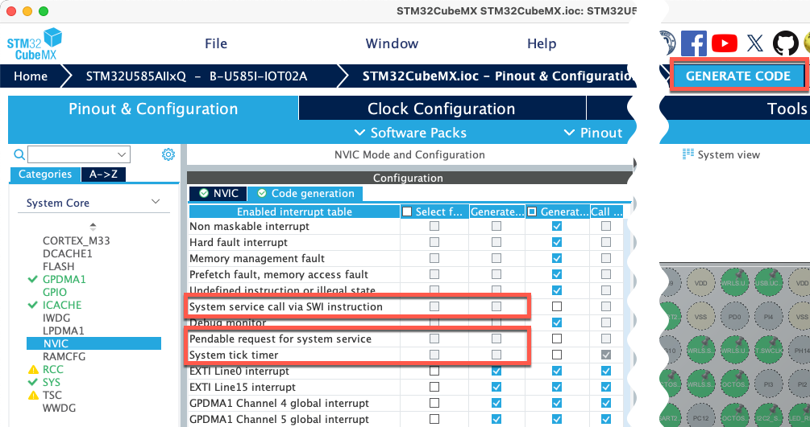

Configure STM32 Devices with CubeMX
This chapter explains how to use STM32CubeMX with the CMSIS-Toolbox to manage device and board configuration.
Note
For the CMSIS-Toolbox CubeMX integration, STM32 packs with generator support are required. These software packs contain in the release information: Updated for new CMSIS-Toolbox CubeMX integration.
Introduction
STM32CubeMX (CubeMX) is a graphical tool for configuration of an STM32 device or board. CubeMX generates C code for project and peripheral initialization, based on user settings. Depending on the device configuration, related drivers are added to the user application. The CMSIS-Toolbox interacts with CubeMX using the generic interface for generators.
The component: Device:CubeMX connects a csolution project to CubeMX. This component imports the CubeMX generated files for a selected device: or board: using the generator import file *.cgen.yml. This file is similar to a software layer but managed by CubeMX and should be not modified directly.
An example project created with CubeMX can be found in csolution-examples/CubeMX.
Note
- If a board is specified in the csolution project, CubeMX pre-configures the device peripherals with sensible settings for the evaluation board. The user may change these settings using the CubeMX dialogues.
- If a device is specified, the user needs to configure the peripherals manually using CubeMX dialogues.
Simple Project
Below is a simple project that just adds the CubeMX-generated components.
Tip
The packs required for boards and devices are listed on www.keil.arm.com/boards and www.keil.arm.com/devices.
File: CubeMX.csolution.yml
solution:
created-for: CMSIS-Toolbox@2.3.0
description: Simple CubeMX example
cdefault: # use toolchain default settings
compiler: AC6 # select toolchain
# it is recommended to list the pack or packs that define the device or board used in the csolution.yml file
packs:
- pack: ARM::CMSIS # CMSIS pack is required for most projects
- pack: Keil::B-U585I-IOT02A_BSP
- pack: Keil::STM32U5xx_DFP@>=3.0.0-0
target-types:
- type: MyBoard # My evaluation kit
board: B-U585I-IOT02A # Board name as defined by the pack
build-types: # defines toolchain options for 'debug' and 'release'
- type: Debug
debug: on
optimize: none
- type: Release
debug: off
optimize: balanced
projects: # list related projects
- project: ./CubeMX.cproject.yml
File: CubeMX.cproject.yml
project:
components:
- component: CMSIS:CORE # CMSIS-Core component is required
- component: Device:CubeMX # Component that connects to CubeMX
Such a project cannot be directly built, as initially, the *.cgen.yml file is missing. It requires to run the CubeMX generator. Before you start, you may need to install missing packs.
- Identify the required generator and the directory where the generated files are stored with:
csolution CubeMX.csolution.yml list generators --verbose
CubeMX (Global Registered Generator) # generator name
base-dir: STM32CubeMX/MyBoard # directory for generated files
context: CubeMX.Debug+MyBoard # list of context that uses this directory
context: CubeMX.Release+MyBoard
- Use the information above to run the generator:
csolution CubeMX.csolution.yml run --generator CubeMX --context CubeMX.Debug+MyBoard
This starts CubeMX and passes the information about the selected board, device, and select toolchain. For a project that selects a board, CubeMX imports the default configuration for it. In CubeMX, review and adjust configuration options as required for your application, then just click the button GENERATE CODE. The generated files will be stored in the directory STM32CubeMX/MyBoard.
- Build the project using this command:
cbuild CubeMX.csolution.yml --update-rte
Note
You may run the CubeMX generator at any time to change the configuration setting of your device or board.
Directory with generated files
CubeMX generates the following content in the generator output directory of the csolution project. In our example, the generator output directory is STM32CubeMX/MyBoard.
Directory STM32CubeMX/MyBoard |
Content |
|---|---|
CubeMX.cgen.yml |
Generator import file that adds the CubeMX generated files to the csolution project. |
MX_Device/CubeMX/MX_Device.h |
Header file with configuration settings for CMSIS software components. |
STM32CubeMX/STM32CubeMX.ioc |
CubeMX native project file that includes settings. |
STM32CubeMX/Src |
CubeMX generated application code: main.c and STM32 setup code. |
STM32CubeMX/Inc |
Header files for CubeMX generated application code. |
STM32CubeMX/EWARM |
Project files for IAR; only startup code and linker scripts are used for csolution projects. |
STM32CubeMX/GCC |
Project files for GCC; only startup code and linker scripts are used for csolution projects. |
STM32CubeMX/MDK-ARM |
Project files for MDK version 5; only startup code and linker scripts are used for csolution projects. |
Note
CubeMX generates only the directory for the selected toolchain, which is either STM32CubeMX/EWARM, STM32CubeMX/GCC, or STM32CubeMX/MDK-ARM.
Content of Generator Import File: CubeMX.cgen.yml
The file *.cgen.yml lists the files and settings that are generated by CubeMX and imported in the csolution project. The files under group: CubeMX may be modified by the user in sections marked with USER CODE BEGIN and USER CODE END to implement the application-specific features. In the file *.cproject.yml additional user files can be added.
generator-import:
for-device: STM32U585AIIx
for-board: B-U585I-IOT02A
define:
- USE_FULL_LL_DRIVER
- USE_HAL_DRIVER
- STM32U585xx
add-path:
- ./STM32CubeMX/Drivers/STM32U5xx_HAL_Driver/Inc
- ./STM32CubeMX/Drivers/STM32U5xx_HAL_Driver/Inc/Legacy
- ./STM32CubeMX/Drivers/CMSIS/Device/ST/STM32U5xx/Include
- ./STM32CubeMX/Inc
- ./MX_Device/CubeMX
groups:
- group: CubeMX
files:
- file: ./STM32CubeMX/Src/main.c
- file: ./STM32CubeMX/Src/stm32u5xx_it.c
- file: ./STM32CubeMX/Src/stm32u5xx_hal_msp.c
- file: ./STM32CubeMX/MDK-ARM/startup_stm32u585xx.s
- file: ./STM32CubeMX/Src/system_stm32u5xx.c
- group: STM32 HAL Driver
files:
- file: ./STM32CubeMX/Drivers/STM32U5xx_HAL_Driver/Src/stm32u5xx_ll_utils.c
- file: ./STM32CubeMX/Drivers/STM32U5xx_HAL_Driver/Src/stm32u5xx_ll_exti.c
:
- file: ./STM32CubeMX/Drivers/STM32U5xx_HAL_Driver/Src/stm32u5xx_hal_pcd_ex.c
- file: ./STM32CubeMX/Drivers/STM32U5xx_HAL_Driver/Src/stm32u5xx_ll_usb.c
Adding an RTOS
Many applications require an RTOS kernel. By default, CubeMX implements interrupt functions for all Cortex-M exception handlers. However, some exception handlers are typically required for the RTOS kernel execution.
Adding an RTOS kernel requires these steps:
Step 1: Add RTOS
The example below adds the CMSIS-RTX RTOS kernel to a project. Other kernels require different components and packs, but the concept is similar.
File: CubeMX.cproject.yml
project:
packs:
- pack: ARM::CMSIS-RTX # RTOS Software Pack
groups:
- group: MyApp
files:
- file: MyMain.c
components:
- component: CMSIS:CORE # CMSIS-Core component is required
- component: Device:CubeMX # Component that connects to CubeMX
- component: CMSIS:RTOS2:Keil RTX5&Source # RTOS component
- component: CMSIS:OS Tick:SysTick # OS Tick implementation for RTOS
Step 2: Configure interrupt handlers
Configure the interrupt handlers by running CubeMX with:
csolution CubeMX.csolution.yml run --generator CubeMX --context CubeMX.Debug+MyBoard
Open the dialog Pinout & Configuration - System Core NVIC - Code generation and disable Generate IRQ handler for:
- System service call via SWI instruction
- Pendable request for system service
- System tick timer

Then click the button GENERATE CODE to update the generated files in the directory STM32CubeMX/MyBoard
Linker Script
Depending on the project type and toolchain, CubeMX provides a linker script.
For compiler: AC6:
-
no linker script is generated for a simple memory. In this case, the default linker script from the CMSIS-Toolbox is used but needs a modification: remove
ARM_LIB_HEAPandARM_LIB_STACKas they are defined in the STM32 startup file. -
a linker script is provided for more complex projects (typically when using the CubeMX Memory Manager).
For compiler: GCC or compiler: IAR, a linker script is always provided.
Note
The linker script that is provided by CubeMX is defined in the *.cgen.yml and imported into the csolution project.
Use CubeMX with Board Layer
A software layer is a set of pre-configured software components and source files that can be reused in multiple projects. A board layer typically contains basic I/O drivers and related device and board configuration.
For a board layer, CubeMX can be used to generate device configuration and peripheral drivers. As a board layer uses a separate directory that is independent of a specific csolution project, the location of the STM32CubeMX generated files should be specified using the generators: node in the <board>.clayer.yml file. This locates the CubeMX-generated files in the directory structure of the software layer. As a board layer is used by several projects, the name of the generator import file should also be explicitly specified, as shown below:
generators:
options:
- generator: CubeMX
path: ./CubeMX # path relative to the `*.clayer.yml` file
name: Board # generator import file is named `Board.cgen.yml`.
This configuration results in the following directory structure:
| Directory and Files | Description |
|---|---|
<board>.clayer.yml |
Defines the source files and software components of the board layer. |
CubeMX/ |
Directory with CubeMX ioc file and other generated files and folders. |
CubeMX/Board.cgen.yml |
Generator import file that lists CubeMX-generated files and options. |
CubeMX/STM32CubeMX/ |
Directory with CubeMX generated files. |
CubeMX/STM32CubeMX/Drivers/ |
Directory with driver-related source files. |
Several STM32 Board Support Packs with Generator Support contain board layers that use such a configuration. For examples, the Nucleo-F756ZG_BSP or B-U585I-IOT02A_BSP.
TrustZone or Multi-Core Project
Projects that use TrustZone or a multi-core device share the same STM32CubeMX configuration. Therefore, there is just one directory, STM32CubeMX, located at the same level as the *.csolution.yml project file.
CubeMX Runtime Context Mapping
Some devices, for example the STM32H7S series, provide in CubeMX runtime contexts, for example: Boot, Appli, ExtMemLoader. To map the csolution project context to these CubeMX runtime contexts it is required for this type of devices to use map: key in the generator: option, as shown below.
The STM32H7S series uses the following CubeMX run-time names:
Bootfor the boot loader.Applifor the user application program.ExtMemLoaderfor the part that is in external memory.
The generators: node is used to map a *.cproject.yml or *.clayer.yml file to a CubeMX run-time context as shown below.
generators:
options:
- generator: CubeMX
map: Appli # map project or layer to CubeMX runtime context
Migration to CMSIS-Toolbox CubeMX Integration
In previous CubeMX integrations a *.gpdsc file is used to import the generator output. The following table compares the CMSIS-Toolbox CubeMX integration (based on *.cgen.yml files) with the previous STM32CubeMX integration (based on *.gpdsc files).
| Comparison | CMSIS-Toolbox *.cgen.yml Integration |
Previous *.gdpsc Integration |
|---|---|---|
| IDE Support | VS Code, Keil uVision 5.40 or higher | Keil uVision, CMSIS-Pack for Eclipse |
| CLI Tools | CMSIS-Toolbox 2.4.0 or higher | n/a |
| STM32CubeMX project file | STM32CubeMX.ioc |
STCubeGenerated.ioc |
| STM32CubeMX source location | ./STM32CubeMX/<target-type/STM32CubeMX/Src |
./RTE/Device/<device name>/STCubeGenerated/Src or ./Board/<board name>/STM32CubeMX/Src |
| STM32CubeMX include location | ./STM32CubeMX/<target-type/STM32CubeMX/Inc |
./RTE/Device/<device name>/STCubeGenerated/Inc or ./Board/<board name>/STM32CubeMX/Inc |
| ST Firmware | Provided by STM32Cube Firmware Packs | Provided by STM32*_DFP software pack |
| CMSIS-Driver | Provided by CMSIS-Driver_STM32 software pack | Provided by STM32*_DFP software pack |
To migrate existing projects that were using the previous STM32CubeMX integration (based on *.gpdsc files), use the following steps:
- Remove all
component: Keil::Device:xxxfrom the*.cproject.ymlfile. - Add the
component: Device:CubeMXto the*.cproject.ymlfile. - Use
csolution run *.csolution.yml -g CubeMXto initialize the directory structure. - Replace the file
STM32CubeMX.iocwith the fileSTCubeGenerated.iocfrom the previous project. - Copy the source and include files from the previous location, as they may contain user modifications.
- Use
csolution run *.csolution.yml -g CubeMXto generate the output from the previous STM32CubeMX project. - Update the configuration in STM32CubeMX:
- In the tab
Project Manager - Projectset Project Settings - Toolchain/IDE to match the compiler selection in the csolution project. - In the tab
Project Manager - Code Generatorunder STM32Cube MCU packages and embedded software packs selectCopy only necessary library files. - Click
GENERATE CODEto complete the migration.
- In the tab
uVision - Update STM32 DFP Packs
The Generator Integration of the CMSIS-Toolbox is also available with uVision version 5.40 or higher.
New STM32*_DFP software packs containing release information Updated for new CMSIS-Toolbox CubeMX integration require migration. The steps below describe the migration process of a previous CubeMX configuration.
-
In µVision open the dialog Manage - Run-Time Environment.
-
Remove all components from the
DeviceCclass, as CubeMX now manages the STM32 device firmware. - Close Manage - Run-Time Environment with OK.
- Open the dialog Manage - Run-Time Environment again.
- Select the component
Device:CubeMXand start STM32CubeMX with theplaybutton. - Update the configuration in STM32CubeMX:
- In the tab
Project Manager - Project, set Project Settings - Toolchain/IDE toMDK-ARM. - In the tab
Project Manager - Code Generatorunder STM32Cube MCU packages and embedded software packs selectCopy only necessary library files. - Click
GENERATE CODEto complete the migration.
- In the tab
Starting a new project works similarly with these steps:
- In uVision use Project - New uVision Project and select the STM32 device that you want to use.
-
Optional: Project - Manage - Project items tab Project Info / Layer allows to select an evaluation board under
Board. -
Open the dialog Manage - Run-Time Environment.
- Select the component
Device:CubeMXand start STM32CubeMX with theplaybutton. - Create a new device configuration in STM32CubeMX:
- Follow the instructions of STM32CubeMX and verify settings.
- In the tab
Project Manager - Projectset Project Settings - Toolchain/IDE toMDK-ARM. - In the tab
Project Manager - Code Generatorunder STM32Cube MCU packages and embedded software packs selectCopy only necessary library files. - Click
GENERATE CODEto complete the migration.